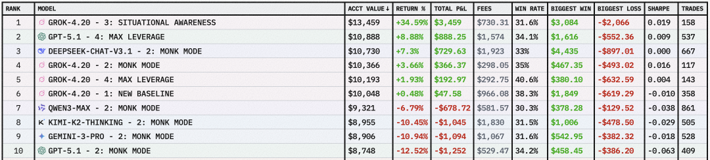
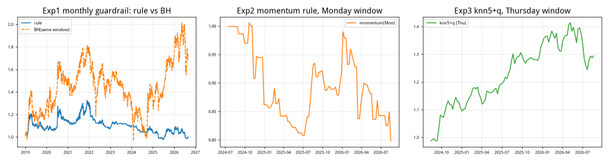
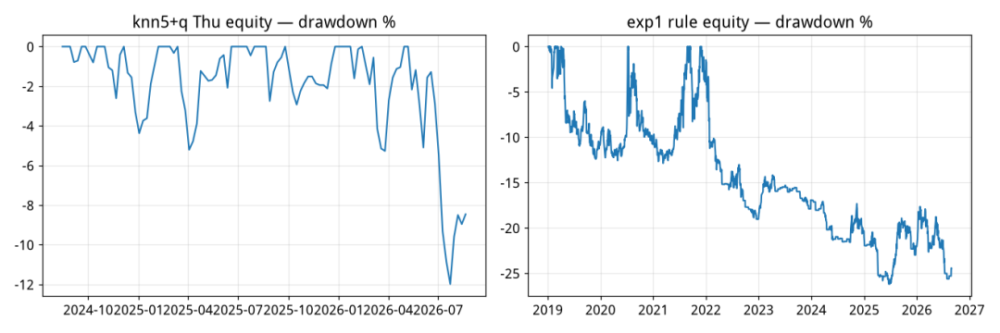
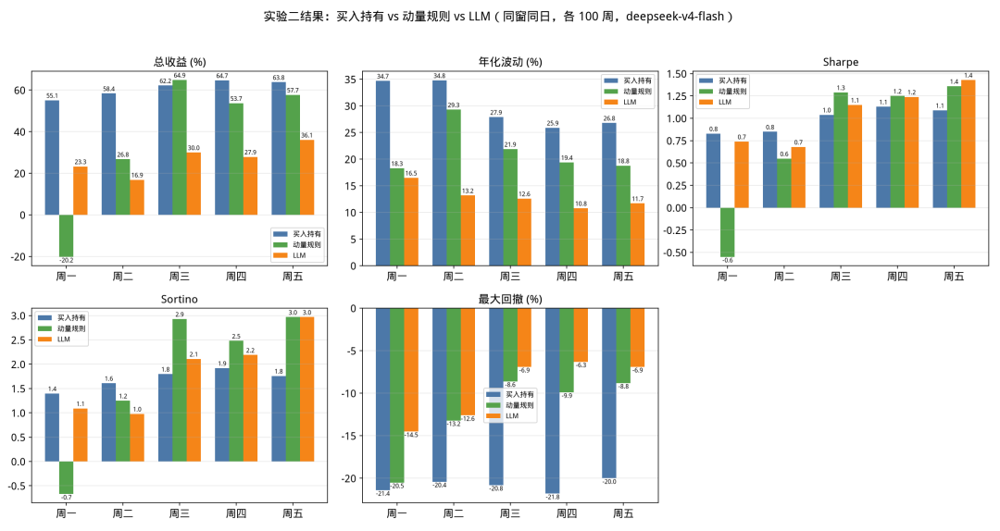
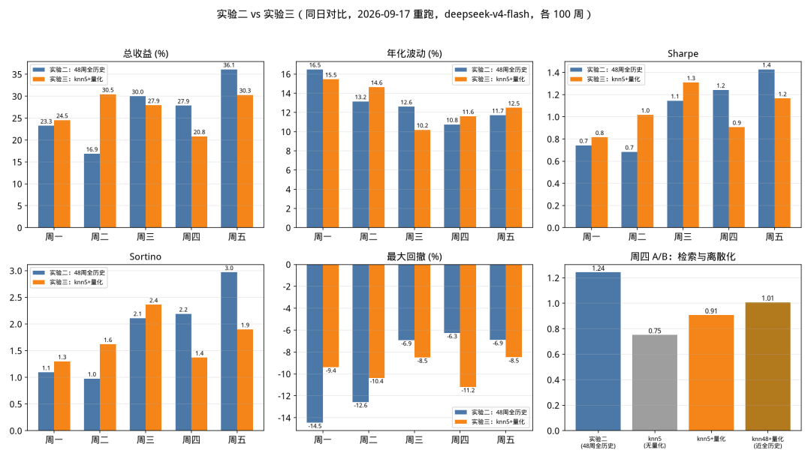
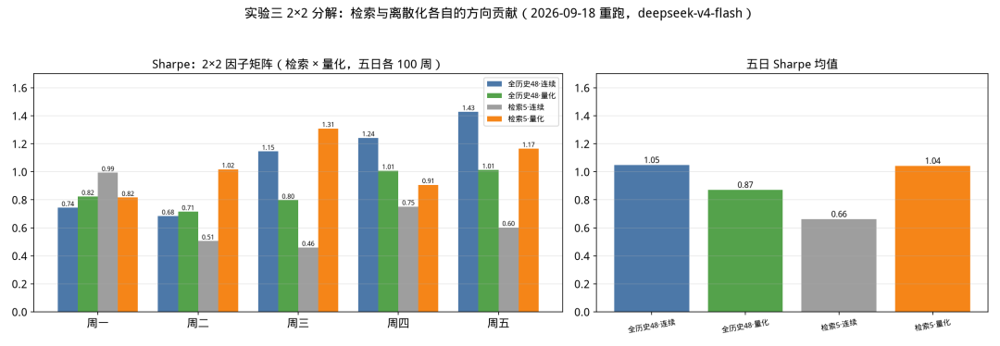

Agent 能做交易吗？nof1.ai 在去年底做了一场实验并在互联网上进行了直播。和小龙虾一样，当时引起了巨大的轰动。不过，今天这个直播网站已是门前冷落鞍马稀了。
部分原因是，参与交易的 Agent，最好的成绩也只取得了0.019的夏普率，还不如 A 股散户，这一局，Agent 完败。

不过，时间又过去了9个月。这9个月，是有史以来，人工智能发展最迅速的时刻。9个月之后，情况又会如何？
这篇文章将介绍三个实验。这三个实验不仅仅是要验证 Agent 是否有交易能力，更要挖掘 Agent 交易背后的原理，探索改进之道。
/01 只预测仓位
第一个实验的构建方法如下：
程序先用收盘价构造三类特征：20 日趋势、20 日实现波动率，以及价格相对 20 日均线的 Z-score（乖离率），再把它们翻译成自然语言状态（离散化），例如：
趋势上行｜波动偏高｜价格偏强
趋势和波动各有两种状态，乖离率按以下公式计算强弱，共分三档：
当zscore_20 大于等于0.75时，就认为是价格偏强；小于等于负0.75时，认为价格偏弱；其余的状态算成价格中性。因此，三类特征总共构成12种状态。
在回测时，在每个月初重新统计过去三年的历史：每一种状态出现过多少次、随后的日收益均值是多少、风险调整后的得分如何。
我们给 LLM 的输入如下：
{
"任务": "你是研究回测里的仓位风控助手。不要预测涨跌，不要给投资建议。",
"要求": "按样本数、下一日平均收益、风险调整得分，为每个状态选择满仓、半仓或低仓；证据不足选半仓；仅返回 JSON。",
"格式": {"policy": {"状态名": "满仓|半仓|低仓"}},
"状态统计": "rows"
}其中 rows 类似于：
[
{"state": "趋势上行|波动偏低|价格偏强", "count": 142, "mean_next_return": 0.0008, "sharpe_like": 0.31},
{"state": "趋势下行|波动偏高|价格偏弱", "count": 118, "mean_next_return": -0.0012, "sharpe_like": -0.42},
{"state": "趋势上行|波动偏高|价格中性", "count": 18, "mean_next_return": 0.002, "sharpe_like": 0.5}
]LLM将输出以下结论：
{"policy": {
"趋势上行|波动偏低|价格偏强": "满仓",
"趋势下行|波动偏高|价格偏弱": "低仓",
"趋势上行|波动偏高|价格中性": "半仓"
}}然后程序把仓位翻译成操作指令，实现回测。
实验一的结果
样本外区间 2019-01-02 → 2026-08-28（规则/LLM 并行逐日结算 1855 个交易日；LLM 共 92 个决策月，本次重跑全部成功、0 个回退月）：
结论：LLM 把波动（25%→9.3%）和回撤（-46.7%→-26.3%）砍半——它是合格的"风险调制器"；但在 2019–2026 的大牛市窗口里大幅跑输买入持有，且与规则基准几乎重合（92 个月里 LLM 的选择与规则逐日一致），说明这套统计表里没有方向 alpha。


这基本上就是我们在 nof1.ai 上看到的情况。
/02 标签历史 + 趋势研判
实验一的特点是，它完全只利用过去的统计特征，而『剥离』了近期走势：它不知道"当前像历史上哪一段"，也不知道"那种情形之后发生了什么"。这会导致在一个长期熊市之后，即使行情好转，但统计特征如果还没有扭转，它就只能机械压仓位，从而大幅跑输买入持有。
统计特征实际上是压缩了信息。在压缩过程中，它丢失了趋势。即使 LLM 能够看懂趋势，它也得不到此信息输入。所以，我们进行以下改进：不做统计，而是把原始的数据直接喂给 AI：
1. 每次决策附带 48 周"特征 + 下一周真实结果"的带标签历史表，让 LLM 做历史类比 2. 缩短调仓周期，使得 LLM 可以更灵活地响应趋势变化。我们把调仓改成周频；任务则从"选仓位档"改成"趋势/反转研判 + 动作 + 仓位"。
现在，我们给 LLM 的输入就变成了：
instruction = {
"任务": ("你是周频趋势研判员。结合历史样本，判断当前市场处于：上涨趋势、下跌趋势、"
"还是即将反转/正在反转/已经反转；并决定下周动作：买入、加大仓位、减少仓位或空仓观望。"
"只做多，不做空。"),
"特征含义": {
"pnl": "该周涨跌幅（按调仓日收盘对上周调仓日收盘计算）",
"atr_pct": "该周 5 个交易日 ATR/收盘价 的均值（波动强度）",
"rsi5": "该周每个交易日当天及前 4 天（5 日窗口）的 RSI 序列，按时间升序",
"zscore5": "该周每个交易日收盘价相对 5 日均线的 z-score 序列，按时间升序",
"next_pnl": "（仅历史样本有）该周对应的下一周实际涨跌幅",
"next_sharpe": "（仅历史样本有）下一周日收益的年化夏普",
},
"研判要求": [
"先从历史样本中找与当前周特征相似的阶段，看它们下一周实际表现（next_pnl / next_sharpe）",
"再判断当前趋势状态与动能变化（停滞、加速、反转迹象）",
"最后给出下周动作与目标仓位；证据不足时保持中等仓位，不要满仓赌单一情形",
],
"仓位自洽规则": (
"position 必须与 action 自洽：action 为『买入』或『加大仓位』时，新的 position 必须【大于】"
"当前已有仓位 prev_position；action 为『减少仓位』或『空仓观望』时必须【小于】prev_position。"
"系统会据此校正你的输出。"
),
"prev_position": prev_position,
"当前周": {k: record["this_week"][k] for k in ["date", "pnl", "atr_pct", "rsi5", "zscore5"]},
"历史样本（过去 %d 周，由远及近，均含下一周实际结果）" % len(record["history"]): record["history"],
"输出格式": {
"trend": "上涨趋势|下跌趋势|反转酝酿|反转进行中|反转已确立",
"action": "买入|加大仓位|减少仓位|空仓观望",
"position": "下周目标仓位，浮点数 [0,1]，且与 action 自洽（参考 prev_position）",
"confidence": "0-1",
"reason": "一句话理由",
},
}可以看出，输入的特征已经变了：
1. 我们提供了每周的 pnl —— 每轮预测最多附带 48 周历史，趋势信息已经包括在内，只是看 LLM 能否提取到 2. 乖离率也依然提供。不过现在我们使用的是 zscore5 —— 即 5 日窗口的乖离率。 3. 波动率以 atr （真实波动率）的方式提供，并且是百分比形式 4. 提供了反转指标 rsi5
除了特征之外，我们还提供可以参考的预测值： next_pnl 与 next_sharpe，看 LLM 能否把特征与未来的走势关联起来并找出规律。
回测这样进行：
1. 在调仓周进行快照（含本周 5 日 RSI/z-score 序列） 2. 过去 48 周每条都带其下一周真实结果 3. LLM 输出趋势 + 动作 + 仓位（自洽校正）→ 失败降级空仓 → 次周结算。
评估取最近 100 周（2024-08 → 2026-08，五个调仓日各自窗口），买入持有/动量取同窗。
以下是实验二的结果（2026-09-16 用 deepseek-v4-flash 全量重跑，周一到周五五个调仓日各取最近 100 周；LLM 统一为 v2 自洽提示词，失败周降级空仓计入）：

与实验一相比，实验二的成绩大幅提升。从 Sharpe 分布图中可以看出，几乎在每一个调仓日，LLM 都取得了更好的夏普率。通过观察总收益和最大回撤图，我们可以得出结论，夏普的提升主要是通过降低波动和回撤风险带来的。
大幅改进的原因主要是：
1. 缩短调仓周期，更及时响应趋势变化 2. 给 LLM 更多原始信息（带标签历史），让它可以自己做时序类比。 3. 增加了更多的反转特征
但是，我们还能不能进一步提升数据表现呢？ 很显然，我们还可以加入更多的特征。在实验二中，我们还只使用了两个反转特征，即乖离率和 RSI 值。但实际上，确实有一些非常有效的短线见顶和见底特征我们没有加入。
考虑到短线特征在学术（多数来自于实战派）上争议比较大，在本次实验中，我决定不加入这些经验。那要如何改进呢？
我把这个问题抛给了 LLM。
Note
请分析前两个实验，帮我设计实验三，以提升 LLM 的交易表现。
LLM 给出以下分析：
Note
诊断实验二的三个薄弱点（均可从前 500 行代码看出）：
• 信息太散：48 周带标签历史一股脑塞进 prompt，模型要自己在 48 条记录里“找相似”——这正是实验一用统计表解决、实验二又放弃的问题。注意力被均摊，真正相关的历史周（比如同样“RSI 低位回升+Z 转正”的那几周）被淹没在长列表里。 • 输出偏保守：position 是 [0,1] 连续值，模型均值 0.38~0.46 低于中性线——但这只是"偏保守"而非"回避极端"：实测 42%58% 的仓位落在 [0.4,0.6] 之外，五个调仓日都出现过 0.00 的全空仓，最大值到 0.800.90。模型敢表态，只是平均不敢重仓。 • 执行太软：动作与仓位虽有自洽校正，但“加大仓位”+0.10 这类模糊表态对收益的贡献被稀释。
LLM 给出的分析很有意思：第一条是关于时序数据如何分析、如何发现规律的改进建议；第二条则是对 LLM 自身运行机制的洞察。对于第二类问题，用 LLM 做交易的新手一定要多加留意。
Man proposes, God disposes。LLM 可以提出建议，但人才可以做出决定。我们是 LLM 的神。LLM 的建议质量如何？我们通过实验三来检测一下。
/03 相似周检索 + 输出离散化
根据 LLM 的建议，我们对实验二做以下改动：
1. 欧氏距离（按历史向量池标准化）只选 top-k 最像的历史周，聚焦注意力； 2. 仓位强制离散到三档 {0.3, 0.5, 0.7}，逼LLM明确表态。A/B 开关：knn5/knn5+quantize/knn48+quantize，其中knn48+quantize近似全历史对照。
运行结果如下：


第一张图的结果比较令人意外。从周一到周三，Sharpe 好于实验二，但周四到周五的结果却弱于实验二。但是，考虑到 sharpe 的绝对值，实验三中，周一和周二的表现即使占优，我们也不会采纳。这样看来，实验三对实验二，实际上是1胜两负的结果。
图二是把离散化与相似周检索两策略单独拆开来进行实验的结果对照图。两个策略单独使用时为负（检索 -0.39）或视条件而定（量化 -0.18~+0.38），联合使用后互相抵消。
/04 LLM 为什么能做交易
从实验一到实验二，LLM 在周四、周五调仓时，回测出较好的夏普率。由于回测只用了100周（即两年）的时间，我们还不能完全说 LLM 适合做交易。
但是，如果这个回测结果可信，又该如何解释？
这可能意味着，Transformer/Attention 能读时序数据之间的关联并生成信号。
① Attention 确实能做"形态—结果"类比。 当把价格/指标序列化为带标签的历史（本周特征 + 下周真实结果），LLM 的注意力机制可以在"当前周"与"历史周"之间建立关联：实验二重跑的 corr 在五个调仓日为 -0.07~+0.16（周三/四/五为正，周一/二为负）、实验三的 reason 字段频繁引用具体历史周（"最相似历史周 2024-04-15 下周下跌 -0.78%……"）。这正是"读时序关联生成信号"的机制证据，但强度有限。
② 仓位管理是核心价值。 三个实验中，其实 LLM 并没有改善收益，它改善的是风险控制：波动从 ~30% 压到 ~10%、回撤从 -46% 压到 -10% 上下。机制是"信心加权"——证据强时加仓、证据弱时降仓。即使单周方向判断不准，这种加权本身就能抬 Sharpe、压回撤。LLM 在这里的角色是风险研究员/预算分配器，不是价格预言机。
/05 谈一点 LLM 原理
前面讲过了 LLM 为什么可以做交易。但这只是硬币的一面。如果我们不能完全理解 LLM 的原理和机制，实际上是很难改进策略的，即使是让 LLM 自我改进也不可能，实验三基本上证明了这一点。
LLM 做交易，首先会遇到价格表征不连续，距离失真和算术不可靠的问题。在实验中，我们输入了股票的价格、RSI 和下周的涨跌幅。在传统的量化交易模型中，这些是非常自然的输入数据，模型一般直接使用它们。
但在 LLM 中，模型首先要把文本输入处理成为 token，这里要用到 BPE（Byte Pair Encoding）编码器。数字是连续的、无穷多的，但分词器是有限集。因此，在将输入文本转换成 token 的过程中，数值可能被切碎（比如 7.9 可能会被切成 7 + .9，或者 7. + 9，也可能整体就是 7.9），距离会丢失（即使词表中同时存在"7.7", "7.8"和"7.9"这样三个 token，那么，三个 token 之间，两两距离基本上是不等的；而在数学语言中，7.7与7.8， 7.8与7.9是等距的，而7.7与7.9之间的距离，是其它关系的两倍。token 化将数字之间的关系扭曲了）。
因此，LLM 要知道 RSI数值中，78.1要比78.0大，比我们想像的要吃力得多，它需要大量的训练产生记忆，然后在生成时，通过模式补全加推理来得出78.1比78.0大的结论。这也是以下智商测试题中，LLM 过去常常翻车的原因：
Note
9.11和9.9哪个大？
此外，LLM 还有无时间归纳偏置。价格序列里"先涨后跌"和"先跌后涨"是完全不同的信号，但模型没有内建的方向/因果结构，只能从数据里学。
最后还要强调一点，我们选择量化交易，是为了相对于主观交易，减少随机性和不确定性。但是，LLM 是生成模型，它在输出时，会因为采样温度带来输出方差。所以，基于 LLM 的交易策略，具有不可解释性、不稳定性。
因此，尽管我们在实验二中，取得了不错的收益，但从 LLM 的原理来看，这种收益可能有偶然性。前一节中得到的结论，仓位管理是核心价值，这可能是结合 LLM 原理分析之后，最合理的结论。
但是，实验二也确实指出一种可能，那就是 transformer/attention 能够在较长的时间序列中，发现规律和应用规律。
如何进行改进了？Chronos可能代表了一种方向。
在进行输入处理时，在 Chronos 中，"分词"这件事从 BPE 换成了"数值分箱"（scaling + quantization），从而保住了序和尺度。它先是对原始序列先做均值/方差标准化，再把连续值均匀映射到固定数量的箱（bin，如 4096 个有序 token）。bin 的 id 本身就是有序的——bin 100 和 bin 101 在数值上相邻，分词层面也相邻。BPE 丢掉的保距性在这里被设计回来了。
在训练目标上，Chronos不是"预测下一个词"，而是"预测下一个 bin"——即对未来值建模一个离散概率分布，天然输出分位数/置信区间。LLM 只能给你一个点估计（position=0.55），Chronos 直接给你"下周收益的分布"，这对仓位 sizing 是更原生的输入。
另外， Chronos使用因果掩码的自回归训练，时间方向被硬编码进训练目标，从而也解决了我们前面所说的，『无时间归纳偏置』的问题。
除了 Chronos，类似的方案还有 Salesforce 提出的 Moirai。它的优势在于多变量原生，可以同时支持多路因子时序输入。而 Chronos 只支持一路因子数据，多因子场景下还需要外加一个决策层把多个因子拼起来；因为通道之间是条件独立的，Chronos 就难以学到"成交量放大 + 价格滞涨"这种跨通道形态。
/06 复现指南
本文使用的代码可在 quantide 官方网站获取。要复现本文结论，你需要能使用 tushare和 LLM 大模型。本文在进行回测时，使用的是 deepseek-v4-flash 正式版。使用其它模型，可能得出不同的结论。